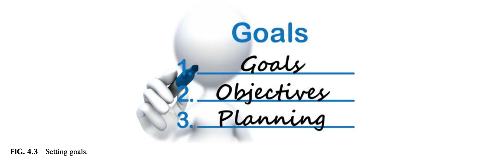
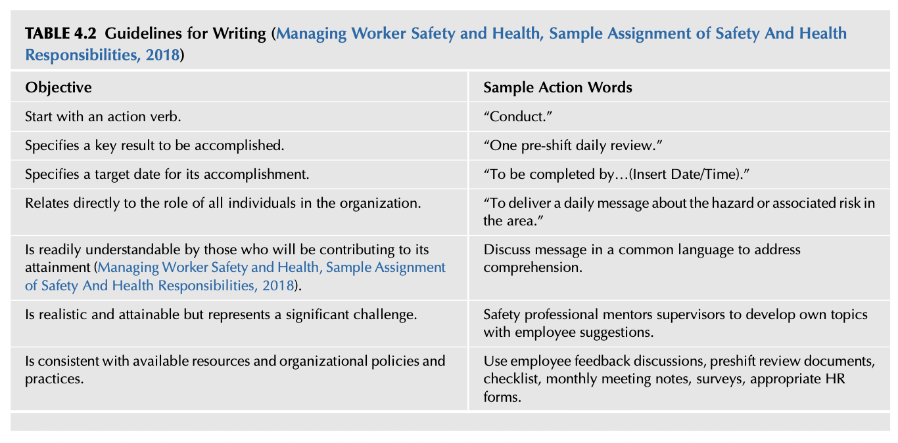

Chapter 4 Establishing the Direction for the Safety Culture
📌 1. INTRODUCTION (도입)
리더십의 핵심 기능은 지정된 안전경영시스템을 개선하기 위한 체계적인 기획 프로세스(Planning Process)를 구축하는 것입니다. 이 기획 프로세스는 조직의 전반적인 문화와 가장 잘 부합하도록 설계되거나 선택되어야 합니다. 안전 기획 프로세스는 안전경영시스템의 목표와 세부목표를 명확히 정의하고, 일일, 주간, 월간, 그리고 경우에 따라 다년간에 걸친 구체적인 안전 활동 일정을 수립해야 합니다. 단기 및 장기 계획은 안전경영시스템이 원래 의도된 대로 올바르게 작동하고 있는지 확인하는 데 필수적인 전략적 기준점(Strategic Benchmarks)을 제공합니다.
새로운 운영상 유해위험요인과 관련 리스크가 발생함에 따라 작업 환경은 언제든 급변할 수 있으므로, 안전경영시스템 프로세스는 유연성을 유지해야 하며 지속적으로 모니터링되어야 합니다. 본 장의 핵심 목적은 안전경영시스템이 경로를 이탈하지 않고 본 궤도를 유지하도록 돕는 체계적 개념과 실무 도구를 제공하는 것입니다. 안전 기획 프로세스는 안전의 근본적 당위성인 '이유(Why)'를 다루며 전사적 안전 미션을 위한 비전을 제시합니다.
📊 1.1 제4장의 핵심 학습 목표
- 비전(Vision) 및 미션(Mission) 진술문을 개발할 수 있다.
- 조직적 목표 표류(Organizational Scope Drift)의 메커니즘과 위험성을 정의할 수 있다.
- 최고경영진의 공약이 담긴 안전 방침 진술문(Safety Policy Statement)을 효과적으로 소통하는 방법을 설명할 수 있다.
- SMART 원칙(Specific, Measurable, Attainable, Realistic, Timely)을 활용하여 실효성 있는 목표와 세부목표를 수립할 수 있다.
- 목표(Goal)와 세부목표(Objective)의 본질적 차이점을 명확히 구분할 수 있다.
- 안전 활동을 위한 구체적인 실행 계획서(Plan of Action)를 개발해야 하는 결정적 이유를 이해할 수 있다.
🗺️ 2. CHARTING THE COURSE—THE PLANNING PROCESS (항로 설정: 안전 기획 프로세스)
안전경영시스템 기획의 궁극적 목표는 안전 방침과 세부목표를 통해 조직의 모든 구성원에게 전사적인 비전과 미션을 일관성 있고 명확하게 전달하는 것입니다. 비전과 미션이 사려 깊게 구축될 때 최고경영진과 현장 근로자 모두로부터 수용, 지지, 그리고 진정한 헌신(Commitment)을 이끌어낼 확률이 획기적으로 높아집니다. 안전경영시스템을 개발하고 기획할 때 수행해야 하는 핵심 활동은 다음과 같습니다:
- 기대되는 결과가 무엇인지 전반적인 비전을 정의함.
- 무엇을 달성해야 하는지에 대한 구체적 미션을 정의함.
- 비전과 미션에 전사적으로 헌신하고, 왜 이러한 노력이 필수적인지 그 당위성을 명시함.
- 기획 프로세스 기간 동안 다양한 안전 활동에 기대되는 결과의 깊이와 범위를 설정하고, 안전경영시스템이 완전하게 실행되도록 이끄는 구체적 실행 과업으로서 목표와 세부목표를 수립함.
🖼️ [그림 4.1 상세 분석] 안전경영시스템 개발 및 기획의 핵심 활동

FIG. 4.1 Core activities for developing and planning a safety management system.
[그림 4.1 상세 보충설명: 안전 기획의 4대 핵심 활동 사이클]
Vision (비전 정의): 기대되는 결과와 미래 청사진을 명확히 설정.
Mission (미션 정의): 달성해야 할 구체적 과업과 실행 내용을 정의.
Commitment (헌신과 당위성): 왜 이 노력이 필수적인지(WHY)를 전사 구성원에게 설득하고 자원을 투입.
Depth and Scope (범위와 실행 과업): 목표와 세부목표를 통해 시스템 실행의 세부 일정과 활동 폭을 구체화.
* "우리에게 가장 큰 위험은 목표를 너무 높게 설정하여 실패하는 것이 아니라, 너무 낮게 설정하여 그 낮은 목표를 달성해 버리는 것이다." — 미켈란젤로 (Michelangelo, 2018)
💡 [Lesson Learned 1] '롤아웃(Roll out)'이라는 단어가 주는 거부감과 용어 선택의 지혜
- 원문 배경 및 상황: 조직 내에서 일상적으로 사용하는 특정 단어나 문구가 무의식중에 구성원들의 반감을 사고 신규 프로젝트에 대한 거부감을 유발하는가? 저자 중 한 명인 제임스(James)는 조직 내에서 관행적으로 쓰이던 특정 문구가 직원들에게 대단히 부정적인 반응을 일으키고 있음을 포착했습니다.
- 현장의 실제 반응: 경영진이나 안전 부서가 회의실에서 "우리는 다음 달에 새로운 XXX 프로그램을 전사 롤아웃(roll out)할 예정입니다"라고 발표하는 순간, 직원들은 눈을 위로 치켜뜨며(eyes rolled back) 냉소적인 표정으로 서로를 쳐다보았습니다. 직원들의 일반적인 반응은 이러했습니다: "아, 또 '이달의 유행(flavor of the month)'이 하나 더 시작되는군. 흥분할 필요 없어. 6개월만 버티면 흐지부지 사라질 테니까. 저 사람들 기분 상하지 않을 정도로만 적당히 흉내만 내자." 즉, '롤아웃'이라는 단어 자체가 현장에서는 관료주의적 밀어내기식 강요로 인식되는 독성(toxic) 용어가 되어버린 것입니다.
- 해결책 및 교훈: 제임스는 긍정적인 직원 지각(perception)을 형성하기 위해 계획된 이니셔티브를 소개하는 더 나은 소통 방식을 모색했습니다. 놀랍게도 복잡한 제도 변경 없이, 단지 '롤아웃(roll out)'이라는 거만한 단어를 '소개하다(introduce)'라는 정중하고 참여적인 표현으로 바꾸는 것만으로도 직원들의 수용성과 지지도가 훨씬 더 높아졌습니다. 안전문화의 성패는 현장과의 소통 단어 하나를 어떻게 선택하느냐에 달려 있습니다.
👑 3. VISION AND MISSION, MAJOR TRAITS OF LEADERSHIP (리더십의 핵심 자질로서의 비전과 미션)
비전과 미션은 동일한 개념이 아닙니다. 비전 진술문(Vision Statement)은 안전경영시스템이 나아가야 할 궁극적인 방향과 달성하고자 하는 미래의 바람직한 상태를 정의합니다. 비전은 스티븐 코비(Stephen Covey, 1990)가 그의 명저 『성공하는 사람들의 7가지 습관』에서 강조한 핵심 원칙을 구현합니다: "끝을 생각하며 시작하라(Begin with the end in mind). 이는 당신의 최종 목적지를 명확히 이해한 상태에서 출발함을 의미한다... 그래야만 당신이 현재 어디에 서 있는지 더 잘 이해할 수 있고, 당신이 내딛는 모든 발걸음이 언제나 올바른 방향을 향할 수 있기 때문이다."
명확한 비전이 확립되면 안전경영시스템의 '이유(Why)'를 조직 전체에 훨씬 더 강력하게 설파할 수 있습니다 (Sinek, 2009). 이는 경영진과 현장 작업자가 안전 활동의 필요성에 의문을 제기할 때 확고한 답변을 제공합니다. 그러나 새로운 비전을 개발하는 것은 양날의 검(two-edged sword)이 될 수도 있습니다. 조직 진단 결과 새로운 비전이 절실함에도 불구하고, 경영진은 현재의 안전 활동으로 충분하다고 오판할 수 있습니다. 이러한 안이한 인식을 극복하기 위해서는 기존 안전 프로세스의 갭(Gaps)과 취약점을 데이터로 입증해야 합니다.
⚖️ 4. MISSION VS. VISION STATEMENT (미션과 비전의 본질적 차이 비교)
비전과 미션의 차이를 명확히 이해해야 목표 설정이 흔들리지 않습니다:
- 미션 진술문(Mission Statement): 회사의 목적과 현재 집중해야 할 초점을 설명합니다. 회사가 무엇을 하고 전반적인 의도가 무엇인지를 구체적으로 서술합니다. 미션은 비전을 강력하게 뒷받침하며, 직원, 고객, 협력업체 및 이해관계자들에게 일상의 목적과 행동 방향을 소통하는 실천적 기준이 됩니다. 미션은 비전을 달성하기 위한 회사의 우선순위와 방법론의 변화를 반영하여 유연하게 조정될 수 있습니다.
| 구분 항목 | 비전 진술문 (Vision Statement) | 미션 진술문 (Mission Statement) |
|---|---|---|
| 핵심 질문 | "우리는 미래에 어떤 조직이 되고자 하는가?" (Where/Why) | "우리는 오늘 무엇을 위해, 누구에게 무엇을 하는가?" (What/How) |
| 시간적 지향 | 미래지향적, 원대하고 이상적인 영감 고취 | 현재 중심적, 실천적 행동 가이드, 구체적인 사업 목적 |
| 문체와 톤 | 가슴을 뛰게 하는 감성적이고 간결한 미래 선언 | 일상 작업에서 매일 지킬 수 있는 명문화된 규범 |
| 변경 주기 | 장기적으로 불변하며 조직의 정체성을 규정 | 비전 달성 경로 및 환경 변화에 따라 탄력적 개정 가능 |
🔭 5. EXAMPLE VISION STATEMENTS (효과적인 안전 비전 진술문 모범 사례)
비전 진술문은 "조직이나 프로그램의 노력을 통해 궁극적으로 달성하고자 하는 명확하고 영감을 주는 장기적 변화를 묘사하는 한 문장의 진술"입니다 (30 Example Vision Statements, 2018).
- 30개 우수 비전 진술문 연구의 핵심 발견:
- 가장 뛰어난 비전은 영감을 주며(inspirational), 명확하고(clear), 기억하기 쉬우며(memorable), 간결(concise)합니다.
- 조사된 30개 조직의 평균 비전 길이는 브랜드명을 제외하고 단 14.56 단어에 불과했습니다.
- 상위 15개 우수 조직의 평균 단어 수는 단 10.5 단어였습니다.
- 가장 짧은 비전은 단 3개 단어(Human Rights Campaign)로 구성되었으며, 가장 긴 비전도 32개 단어(Amnesty International)를 넘지 않았습니다.
- 글로벌 비전 모범 사례:
- 재향군인회(Veterans of Foreign Wars): "퇴역 군인들이 헌신에 걸맞은 존중을 받고, 정당한 권익을 온전히 누리며, 조국을 위해 바친 숭고한 희생을 국가와 국민으로부터 영원히 인정받도록 보장한다."
- 스미소니언 박물관(Smithsonian): "우리의 문화유산을 온전히 보존하고, 새로운 지식을 끊임없이 발견하며, 우리가 가진 자원을 전 세계와 공유함으로써 미래를 빚어낸다."
- 해비타트(Habitat for Humanity): "모든 사람이 온전하고 품격 있는 보금자리를 누리는 세상을 만든다."
🎯 6. MISSION STATEMENT (미션 진술문의 수립과 공동 개발 실천)
미션 진술문은 안전경영시스템이 구체적으로 무엇을 수행하도록 지시받았는지에 대한 포괄적 개요를 제공합니다. 미션은 안전경영시스템의 구조와 관리 체계를 위한 뼈대를 형성하며, 경영진이 지시한 책무와 현장에서 달성해야 할 과업을 명확히 정의합니다.
📌 6.1 미션 진술문 모범 사례: 미국 육군 군악대 (The U.S. Army Band "Pershing's Own")
"미합중국 육군 군악대는 국가 지도부와 모든 정부 부처를 위해 음악적 지원을 제공하며, 장병과 그 가족을 지원하고, 공공 외교, 지역 및 국제 관계 개선, 모병 활동, 음악 교육 프로그램을 뒷받침하는 광범위한 국내외 행사를 지원한다. 이를 통해 우리 군대에는 싸워 이길 수 있는 강인한 전투 의지를 불어넣고, 국민들에게는 군에 대한 지지를 함양하며, 국내외에서 국가의 이익을 드높인다." (Mission Statement, 2018)
📌 6.2 비전 및 미션 수립을 위한 9대 필수 조직 진단 체크리스트
- 현재 조직의 안전문화 성숙도 수준은 어디에 위치해 있는가?
- 달성하고자 하는 기대 결과는 구체적으로 무엇인가?
- 경영진은 안전을 통해 구체적으로 무엇이 달성되기를 기대하는가? (경영진이 유해위험요인의 실제 본질과 통제 요건을 충분히 이해하지 못할 수 있으므로 경영진의 지식수준에 대한 사전 평가 필수)
- 현재 지속적으로 추진 및 지원되고 있는 법적 규제 준수 활동은 무엇인가?
- 법적 규제 영역에 포함되지 않는 사각지대의 위험 관리 및 통제를 위해 어떤 활동이 필요한가?
- 진단 및 프로젝트에 참여하도록 지정된 구성원들에게 충분한 시간이 부여되어 있는가? (본업 외에 안전 업무를 수행할 시간이 보장되는가?)
- 포괄적인 실행 계획(Plan of Action)을 구축하는 데 어떤 규모의 예산과 자원이 필요한가?
- 주어진 예산, 시간적 제약, 직원들의 역량 수준을 고려할 때 목표 달성을 위해 가장 필수적인 핵심 과업은 무엇인가?
- 완성된 실행 계획서는 전사 구성원에게 어떤 매체와 방식으로 소통될 것인가?
🖼️ [그림 4.2 상세 분석] 우리는 어디로 가고자 하는가 (Which way do I want to go)

FIG. 4.2 Which way do I want to go.
[그림 4.2 상세 보충설명: 규제 준수와 지속가능 안전문화의 갈림길]
단순 법적 규제 준수(Compliance-driven): 정부 OSHA 기준 등 최소한의 법적 요건만을 충족하는 데 안주하는 협소한 시각.
지속 가능한 안전문화(Sustained Safety Culture): 법적 준수를 뛰어넘어 근로자의 생명 존중과 전사적 프로세스 혁신을 지향하는 전략적 비전.
* 리더십이 안전의 미션을 단순 규제 준수로만 한정할 경우, 안전 활동은 독립된 단발성 서류 작업으로 전락하여 종합적인 안전경영시스템으로 발전하지 못합니다.
🔍 [Observation 1] 조직의 스마트폰 내비게이션(GPS)과 같은 비전과 미션
- 원문 상세 내용: 오늘날 사람들은 스마트폰이나 태블릿의 지도 내비게이션 애플리케이션을 통해 고속도로와 도심을 주행합니다. 내비게이션은 경로를 안내하고, 교통 정체와 장애물을 우회하는 지름길을 실시간으로 안내합니다. 도로 사정이 바뀌면 음성 안내가 올바른 방향으로 차량을 유도하며 앱은 지속적으로 업데이트됩니다.
- 학술적 유추: 안전경영시스템은 조직의 길을 안내하는 '구글 지도(Google Map)'나 'GPS 내비게이션'과 같습니다. 그리고 비전과 미션은 시스템이 경로를 이탈하지 않도록 바로잡아주는 '안내 음성' 역할을 수행합니다.
- 경고: 도로가 신설·폐쇄되었는데 지도를 업데이트하지 않으면 엉뚱한 길로 들어서듯, 조직 환경이 급변했음에도 비전과 미션을 개정하지 않으면 안전문화는 지도와 음성을 불신한 채 '자동항법(autopilot)' 상태로 방치되어 치명적인 사고를 초래합니다. 비전(Why)과 미션(What)이 살아있을 때만이 구체적인 목표와 실행 과업(How)이 뚜렷해집니다.
📊 [심층 분석: 조직적 목표 표류 (Organizational Scope Drift)]
'스코프 드리프트(Scope Drift)'는 원래 사격에서 소총의 총열(barrel)과 조준경(telescope)의 정렬이 어긋나 영점이 틀어진 상태를 의미합니다. 조준경이 어긋나면 아무리 과녁을 정확히 겨냥해도 탄환은 매번 빗나갈 수밖에 없습니다.
- 조직적 목표 표류의 원인:
- 명문화된 서면 계획 부재: 서면 계획이 없으면 조직 환경이 바뀔 때 본래 목표가 완전히 실종됨.
- 매력적이지만 무관한 쿨한 프로젝트(Cool Project)의 유혹: 스티븐 코비의 4분면 중 '중요하지도 않고 긴급하지도 않은(제4분면)' 프로젝트에 매료되어 헛된 성취감에 빠지는 현상 (1장 의사결정 매트릭스 참조).
- 서로 다른 관리자의 상충되는 지시: 다중 보고 체계(Matrix 조직)에서 부서 간 조율 없는 우선순위 충돌.
- 시어도어 루스벨트(Theodore Roosevelt)의 일화: 미-스페인 전쟁 당시 의용기병대(Rough Riders)를 창설할 때 군수품 조달 명령서를 들고 간 루스벨트에게 한 국방부 관료는 한숨을 쉬며 불평했습니다: "아, 정말 미치겠군! 내 부서는 완벽하게 돌아가고 있었는데, 빌어먹을 전쟁이 터지는 바람에 모든 게 엉망진창이 되어버렸어!" 이 관료는 전쟁을 부서 업무를 방해하는 불청객으로 여겼던 것입니다. 철저한 기획 없는 착수는 목표 표류를 낳습니다 (누가복음 14장 28~30절 망대 건축 비유).
🔍 [Observation 2] 부서 간 사전 조율 없는 프로젝트 동시 추진의 충돌 참사
저자들은 산업 현장에서 다음과 같은 치명적인 목표 표류와 우선순위 충돌을 수없이 목격했습니다:
- 본사 안전 부서와 보안(Security) 부서의 우선순위 프로젝트 동시 추진:
- 두 부서가 사전에 일정이나 필요 인력을 전혀 협의하지 않은 채, 현장 부서에 방대한 데이터 수집과 프로젝트 실행을 동시에 하달함.
- 현장 직원들은 자신의 원래 보고 체계도 아닌 두 부서의 과도한 서류 요구에 치여 본업을 수행하지 못하고 극심한 피로와 냉소주의에 빠짐.
- 현장 여건을 무시한 본사 안전 부서의 특별 교육 강제 지정:
- 현장의 교대근무 일정, 가용 인력, 승인된 연간 예산에 미치는 영향을 전혀 고려하지 않고 본사가 일방적으로 전사 특별 교육을 의무화함.
- 이러한 의사결정권자 간의 충돌 상황에서는 질문하는 태도(questioning attitude)를 유지하고 조직 내부의 정치적 역학 및 리더십의 의도를 파악하는 지혜가 필수적입니다 (미국 에너지부 HPI 핸드북, 2009).
💡 [Lesson Learned 2] 안전 전문가의 기본 책무: 핵심 직무 충실과 철저한 현장 갭 분석
- 원문 핵심 교훈: 저자들의 오랜 실무 경험상, 안전 관리자가 가장 먼저 해야 할 일은 자신이 채용될 때 부여받은 공식 직무기술서(Job Description)상의 핵심 과업과 리더십의 기본 명령을 완벽하게 완수하는 것입니다. 안전 관리자 개인의 지각(perception)과 최고경영진의 지각은 크게 다를 수 있습니다.
- 성급한 개혁 추진의 금지: 기존 안전 프로세스를 대대적으로 변경할 수 있는 전적인 권한을 정식으로 부여받지 않은 상태라면, 첫 단계는 무조건 '현재 조직이 어떻게 돌아가고 있는가(How the current operations function)'를 겸허히 학습하는 것입니다. 조직의 비공식 소통 네트워크와 문제 대응 방식을 완벽히 파악해야 합니다.
- 변화 제안의 절대 기준: 생명과 건강에 즉각적인 위험(IDLH)이 존재하는 긴급 상황이 아니라면, 반드시 체계적인 현장 안전 진단(Assessment)을 완벽하게 끝마친 후에만 개선을 제안해야 합니다. 모든 제안은 안전경영시스템의 구체적인 갭(Gaps), 결함, 그리고 존재하는 위험도(Risk Severity) 데이터에 근거해야만 경영진의 승인을 얻을 수 있습니다.
🌉 7. BOUNDARY SPANNING AND THE MISSION (전사적 경계 확장과 미션 연계)
안전 전문가의 핵심 역할은 조직의 모든 부서와 영역을 넘나드는 '경계 확장자(Boundary Spanner)'이자 핵심 정보 허브(Information Hub)로 기능하는 것입니다 (제2장 및 제3장 참조).
그러나 이러한 역할은 때때로 본래의 안전 미션을 추진하는 데 갈등을 유발합니다. 안전 관리자가 일일 계획을 세워두었음에도 한 부서장이 불쑥 찾아와 "아, 참, 방금 회의 끝나고 왔는데 'X' 업무 좀 지금 즉시 처리해 줘"라고 요구하는 순간, 당일의 계획이 전면 수정되고 강제된 새로운 과업에 휘말리게 됩니다. 이러한 일상적 방해 속에서 중심을 잡기 위해서도 확고한 미션과 기획 체계가 필요합니다.
📜 8. THE SAFETY POLICY STATEMENT, EVIDENCE A VISION HAS BEEN ESTABLISHED (안전 방침 진술문: 비전의 공식적 증거)
많은 기업의 안전 방침서는 수십 페이지에 달해 너무 복잡하고 길어서 아무도 기억하지 못합니다. 법률 문서처럼 장황한 방침서는 캐비닛 속에 방치되는 죽은 '조직적 유물(Artifact)'이 됩니다. 안전 방침 진술문은 조직의 규모와 관계없이 모든 구성원이 구두로 말할 수 있고 쉽게 기억할 수 있는 간결하고 명확한 문장이어야 합니다.
- 안전 방침(Policy Statement)과 안전 절차서(Safety Procedures)의 엄격한 차이:
- 안전 절차서(Procedures): 행정 및 현장 작업의 육하원칙(Who, What, Where, When, How)과 R&R을 상세히 기술한 실무 규정.
- 안전 방침 진술문(Policy Statement): 조직이 표방하는 가치(Espoused Values)를 대변하며 장기적 안전 행동을 이끄는 최고경영진의 서명 선언문.
- 효과적인 안전 방침의 2대 필수 요소:
- 안전 노력을 전폭 지원하겠다는 최고경영진의 서면 공약.
- 안전경영시스템의 목표 및 세부목표와의 유기적 연동.
- 방침은 현장에서 '안전 문제'와 '생산 우선순위'가 정면 충돌할 때 무엇을 따라야 하는가에 대한 명쾌한 판단 기준을 제시해야 합니다. 경영진이 약속을 어기는 순간 방침서는 위선(hypocrisy)으로 전락합니다.
📢 9. COMMUNICATING THE SAFETY POLICY STATEMENT (안전 방침의 전사적 전파 전략)
최고경영진이 서명한 안전 방침은 작업 전 회의(TBM), 주간·월간 회의, 사내 게시판, 인트라넷, 뉴스레터 등을 통해 상시 노출되어야 합니다:
- 작업자의 일상 언어로 투명하고 간결하게 전달되어야 함.
- 신입사원 온보딩, 전보자 교육, 협력업체 및 방문객 지침에 반드시 포함되어 일관된 메시지를 전달해야 함.
- 기억하기 쉬운 모범 안전 방침 단문 예시:
- "우리의 가장 중요한 책임은 임직원의 안전이다."
- "우리 조직의 모든 구성원은 안전한 일터를 누릴 권리가 있다."
- "우리가 수행하는 모든 일은 안전하게 완수되어야 한다."
- "작업이 안전하지 않다면, 결코 작업하지 마라."
🏃 10. COMMUNICATE BY ACTION (말보다 강력한 행동을 통한 소통)
방침을 전달할 때 "행동은 말보다 훨씬 더 크게 울려 퍼집니다(Actions speak louder than words)." 중요한 토론 순간에 리더가 짓는 무심한 표정, 고개의 끄덕임, 부정적인 바디랭귀지는 "방침 따위는 진지하게 들을 필요 없다"는 치명적인 신호를 보냅니다.
🔍 [Observation 3] 침묵 속에 버려진 티셔츠 상자: 알맹이 없는 홍보 캠페인의 비극
- 원문 상세 사례: 저자 중 한 명인 네이선(Nathan)은 한 기업이 전사 임직원을 대상으로 대대적인 '전국 품질 및 안전 동기부여 캠페인'을 추진하던 현장을 목격했습니다. 슬로건이 인쇄된 수천 개의 커피 머그잔, 단체 티셔츠, 오디오 테이프, 각종 기념품이 제작되었고, '전사 축하의 날'에 맞춰 엄청난 홍보 자료가 발송되었습니다.
- 축하 당일의 참상: 마침내 고대하던 축하의 날이 밝았지만, 현장에는 오직 쥐 죽은 듯한 침묵만이 흘렀습니다. 기념 티셔츠도, 안내문도, 행사도 아무것도 없었습니다. 네이선이 프로젝트 총괄 책임자의 사무실 문을 열고 들어가 "도대체 무슨 일입니까? 프로그램은 어디로 갔습니까?"라고 묻자, 방구석에는 먼지 쌓인 기념품 상자더미가 그대로 쌓여 있었습니다.
- 책임자의 황당한 답변: 책임자는 태연하게 말했습니다: "무슨 축하 행사요? 그거 오늘 나눠주기로 되어 있었던 겁니까?"
- 조직적 충격과 교훈: 엄청난 예산과 자원, 시간을 쏟아부었음에도 리더십의 무관심과 실행력 부재로 인해 캠페인은 그 자리에서 폐기되었고, 직원들은 회사의 안전·품질 구호에 대해 완전한 불신과 조소를 보내게 되었습니다. 말로만 외치는 캠페인은 조직문화를 회복 불능으로 파괴합니다.
⚙️ 11. ALIGNING WITH THE ORGANIZATION (경영 비즈니스 전략과의 일치)
단순한 관심 표명만으로는 안전문화가 뿌리내릴 수 없습니다. 안전문화는 일터의 위험 통제와 작업 환경 개선을 위해 필수적인 자원을 실제로 배분하는 리더십의 결단에 달려 있습니다.
안전 방침은 단순한 서류가 아니라, 안전 문제를 대하는 경영진과 근로자의 진정한 '태도(Attitude)' 그 자체입니다. 안전은 기업의 품질 향상, 생산성 증대, 원가 절감 전략과 긴밀하게 정렬되어야만 조직의 핵심 가치로 자리 잡을 수 있습니다.
📊 12. DEFINING GOALS AND OBJECTIVES (목표와 세부목표의 명확한 구분)
목표와 세부목표는 조직의 문제를 해결하고 전략을 실행하는 나침반입니다:
- 목표 (Goal): 프로세스가 미래의 특정 시점에 도달하고자 하는 전반적인 종착지이자 장기적 청사진.
- 세부목표 (Objectives): 특정 기간 동안 목표를 향해 나아가는 구체적인 이정표(Benchmarks)이자 실행 단계.
- 비전과 미션이 수립된 후에 비로소 목표와 세부목표의 구체적인 예산과 타임라인이 도출될 수 있습니다 (Safety Pays for Everyone, 2018).
🎯 13. DEFINING GOALS THAT IMPROVE THE SAFETY MANAGEMENT SYSTEM (SMART 모델을 활용한 안전 목표 수립)
『이상한 나라의 앨리스』에서 앨리스가 체셔 고양이에게 묻습니다:
"여기서 어느 길로 가야 하는지 알려주시겠어요?"
"그건 네가 어디로 가고 싶은지에 달려 있지," 체셔 고양이가 답했습니다.
"어디든 별로 상관없는데..." 앨리스가 말하자, 고양이가 대꾸했습니다:
"그렇다면 어느 길로 가든 상관없잖아." (Carroll, 2018)
오레곤 OSHA에 따르면, "목표를 작성하는 것은 쉽다. 그것은 단지 소원에 불과하기 때문이다." 목표는 구체적인 실행 계획이 수립되고 실행될 때 비로소 가치를 갖습니다. SMART 모델(Meyer, 2003)을 통해 이를 구체화합니다:
🖼️ [그림 4.3 상세 분석] 목표 설정의 지향점 (Setting goals)

FIG. 4.3 Setting goals.
[그림 4.3 상세 보충설명: 모호한 소원에서 구체적 목표로의 전환]
단순히 "안전한 일터를 만들겠다"는 막연한 바람은 목표가 아닙니다.
SMART 프레임워크를 적용하여 명확한 도달 지점과 측정 척도를 갖출 때 조직의 에너지가 한곳으로 집중됩니다.
📌 13.1 Specific (구체성: 5W1H의 원칙)
- 총기록재해율(TCIR)의 감소가 반드시 안전경영시스템의 유효성을 증명하는 것은 아닙니다. 아직 발현되지 않은 치명적 잠재 위험이 은폐되어 있을 수 있습니다.
- 구체적 목표 설정을 위해 5W1H를 정의해야 합니다:
- Why: 목표를 달성해야 하는 구체적인 이유와 조직적 편익.
- Who: 누가 관여하고 실행하는가?
- What: 구체적으로 무엇을 완수하고자 하는가?
- When: 명확한 마감 기한은 언제인가?
- Where: 어느 사업장, 어느 공정에서 실행되는가?
- How: 구체적인 요구사항과 제약 조건은 무엇인가?
📌 13.2 Measurable (측정 가능성: "어떻게 완료를 알 수 있는가?")
- "목표가 공식적으로 완료되었음을 어떻게 알 수 있는가?"라는 질문에 답할 수 있어야 합니다 (Meyer, 2003). 잘못된 지표를 측정하면 엉뚱한 성공을 자축하는 오류를 범하게 됩니다.
- 예를 들어, 상용직을 하청업체나 임시직으로 외주화하여 겉보기 재해율만 낮아진 것을 안전 성과로 착각할 수 있습니다.
💡 [Lesson Learned 3] 6시그마 블랙벨트 인증 프로젝트와 TCIR 후행지표의 치명적 한계
- 원문 배경: 제임스(James)가 6시그마 블랙벨트(Six Sigma Black Belt) 자격 인증을 준비할 때, 인증 필수 프로젝트를 설계하기 위해 과거 5개년 치의 OSHA 300 로그에 기록된 총기록재해율(TCIR) 데이터를 분석 대상으로 삼았습니다.
- 문제점 발견: 데이터를 수집하고 통계적 상관관계를 검증하려 했으나, TCIR 수치와 현장 위험도 사이에는 도무지 의미 있는 상관관계가 나타나지 않았습니다. TCIR은 법적으로 의무 보고되는 사고 건수만을 나타낼 뿐, 기록되지 않은 다양한 상해 유형, 경미한 아차사고, 잠재 유해위험요인 노출 데이터를 전혀 담지 못했던 것입니다.
- 교훈: 사후적 사고 통계(TCIR)에만 의존하는 것은 리스크가 적절히 통제되고 있다는 치명적인 착각을 낳습니다. 위험성평가, 선행 위험 데이터, 상실 데이터를 종합적으로 수집하는 심층 분석 체계를 갖추어야만 올바른 목표를 도출할 수 있습니다.
📊 13.3 Attainable Goals (달성 가능성: 비현실적 목표와 펜슬 휘핑)
- 달성 불가능한 목표는 시스템을 파괴합니다. 전 직원 응급처치 교육 목표를 세운다면, 교육 횟수, 강사 수급, 비용, 조업 중단 영향 등을 철저히 검토해야 합니다.
- 사고 통계만을 측정하는 것은 조립이 끝난 불량품을 사후 검사하는 것과 같은 후행적(Downstream) 접근입니다. 유해위험요인을 사전에 통제하는 선행적(Upstream) 활동을 목표에 연동해야 합니다.
💡 [Lesson Learned 4] 매년 기준을 높이는 본사 감사와 '펜슬 휘핑(Pencil whipping)'의 부작용
- 원문 상세 사례: 한 공장의 안전 관리자는 본사의 연례 안전 감사 시스템에 대해 깊은 절망감을 토로했습니다. 본사의 목표는 매년 감사 평가 기준을 강화하고 채점 기준을 까다롭게 만들어 '지속적 개선'을 유도하겠다는 것이었습니다.
- 현장의 탈진과 포기: 공장 리더십과 현장 직원들은 감사 지적 사항을 개선하기 위해 피땀 흘려 노력했습니다. 그러나 매년 본사가 새로운 감사 기준을 추가하고 난이도를 높이는 바람에, 공장의 안전 감사 점수는 아무리 노력해도 제자리걸음이거나 오히려 전년보다 떨어졌습니다. 본사는 공장의 노고를 전혀 인정해 주지 않았고, 마침내 공장 리더십은 감사를 통과하는 것을 완전히 포기한 채 "어차피 해봤자 소용없다(Whatever)"라는 냉소주의에 빠졌습니다.
- 치명적 결과: 펜슬 휘핑(Pencil whipping): 목표가 지나치게 높고 성과급이나 인사 고과와 결부되어 압박이 가해지면, 인간의 본성은 서류를 허위로 작성하는 '펜슬 휘핑(Pencil whipping)'과 산재 은폐의 유혹에 빠집니다. 현실적인 시간과 역량이 고려되지 않은 목표는 안전문화를 송두리째 붕괴시킵니다.
📌 13.4 Realistic (현실성: 자원과 가치의 정렬)
- 목표는 조직과 안전 프로세스 모두에 실질적인 가치를 제공해야 하며, 리더십과 근로자가 시간과 노력을 쏟아부을 가치가 있어야 합니다.
💡 [Lesson Learned 5] 문해력 교육(Literacy Classes)의 이상과 현실적 제약
- 원문 사례: 네이선(Nathan)은 한 공장에서 근로자들의 문해율(문서 해독력)이 낮다는 이유로 전 직원 대상 '문해력 교육 강좌'를 개설하자는 제안을 접했습니다. 안전 수칙과 매뉴얼을 제대로 읽고 이해하게 만들겠다는 숭고한 취지였습니다.
- 현실적 한계: 취지는 훌륭했으나, 해당 공장의 극심한 이직률, 24시간 가동되는 생산 공정의 압박, 교대근무 여건상 현실적으로 달성 불가능한 비현실적(unrealistic) 목표였습니다. 결국 자원만 낭비되고 실행되지 못했습니다.
📌 13.5 Time and Goal Setting (기한 명시와 충돌 달력의 지혜)
- 명확한 마감 기한이 없는 목표는 추진력을 잃습니다. 마감일이 너무 멀면 나태해지고, 너무 촉박하면 사기가 저하됩니다.
💡 [Lesson Learned 6] 부서 간 일정 충돌을 방지하는 '충돌 달력(Collision Calendar)'의 구축
- 원문 우수 사례: 한 안전/보안 관리자는 전사 부서 간의 일정 중복을 방지하기 위해 '충돌 달력(Collision Calendar)'을 도입했습니다. 이 달력은 전사 주요 행사, 부서별 법정 의무 교육, 정기 보수, 휴일, 경영 미팅 등 모든 일정을 통합 추적했습니다.
- 실무적 효용: 충돌 달력을 통해 특정 기간에 직원들에게 과도한 교육과 업무가 집중되는 '일정 충돌(Collisions)'을 사전에 식별하고, 타 부서와 일정을 사전 조율하거나 분산 배치할 수 있었습니다. 이를 통해 현장의 업무 과부하를 막고 안전 목표의 수용성을 극대화했습니다.
📝 14. DEFINING OBJECTIVES (세부 실행 과업 정의)
세부목표는 수립된 목표를 달성하기 위해 밟아야 할 필수적인 실행 경로입니다.
- 목표(Goal) 예시: X 부서의 각 관리감독자는 1월 31일까지 지정된 2개 작업에 대해 작업위험성평가(JHA)를 완료한다.
- 세부목표 1 (Objective 1): 잠재 손실 위험도와 인터뷰를 기반으로 우선순위 작업 2개를 선별한다.
- 세부목표 2 (Objective 2): 관리감독자와 JHA 개발 방식, 필요 시간, 소요 자원을 사전 협의한다.
📊 [표 4.1 상세 분석] 구체적 목표 수립을 위한 핵심 제언표

TABLE 4.1 Suggestions for Specific Goals.
[표 4.1 상세 보충설명: 현장 맞춤형 안전 목표 제언 항목]
고위험 작업 구역 및 설비에 대한 정기 주간 안전 점검 실시.
안전 개선 우선순위가 유효하게 반영된 유지보수 작업 오더 완료율 관리.
관리감독자와 현장 근로자 간의 1:1 안전 대화 채널 구축.
작업 전 일일 TBM, 주간 안전 미팅, 월간 안전 협의체 운영.
기계별 일일 안전 점검 체크리스트 운용 및 작업자 서명 의무화.
신규 채용자, 임시직, 전보자에 대한 위험성 중심 안전 온보딩 프로그램 재검토.
✍️ 15. WRITING OBJECTIVES (효과적인 세부목표 작성 공식)
잘 작성된 세부목표의 4대 핵심 요건:
- 강력한 행동 동사로 시작할 것 (감소시키다, 증대하다, 개선하다 등).
- 달성해야 할 핵심 결과물을 명시할 것.
- 정량화(Quantifiable)할 것 (수치로 측정 가능한 변화율 명시).
- 구체적인 달성 목표일을 명시할 것.
📊 [표 4.2 상세 분석] 세부목표 작성을 위한 실무 가이드라인

TABLE 4.2 Guidelines for Writing Objectives.
[표 4.2 상세 보충설명: 세부목표 작성 7대 지침과 실무 모범 문구]
1. 행동 동사로 시작: "실시한다(Conduct)."
2. 핵심 결과물 명시: "일일 작업 전 일상 점검 1회(One pre-shift daily review)."
3. 목표 기한 명시: "...(특정 일자/시간)까지 완료한다."
4. 조직 구성원의 역할과 직결: "해당 구역의 유해위험요인에 관한 일일 메시지 전파."
5. 참여자가 쉽게 이해 가능한 언어 사용: 현장 작업자의 일상 언어로 소통.
6. 현실적이면서도 도전적인 과업 설정: 안전 전문가가 관리감독자를 코칭하여 자체 주제 개발 유도.
* 7. 가용 자원 및 사규와의 정렬: 피드백 미팅, 점검표, 설문지 등 기존 인사·경영 양식 활용.
🗣️ 16. COMMUNICATING GOALS AND OBJECTIVES (목표의 전사적 전파와 캐스케이딩)
목표를 수립한 후에는 전 직원이 경영진의 기대 수준을 완벽히 이해할 수 있도록 투명하게 소통해야 합니다. 목표 달성이 지지부진한 경우, 목표가 너무 낮게 설정되었거나, 무가치한 활동에 매달렸거나, 조직 여건이 급변(소유권 변경, 구조조정 등)했기 때문일 수 있습니다.
환경이 바뀌면 즉시 경영진과 대면 회의를 열어 목표를 현실에 맞게 보정해야 합니다. 비디오, 오디오 등 시각적 미디어를 활용하여 목표 진척도를 실시간으로 업데이트하는 것이 효과적입니다.
🔍 17. REVIEWING OBJECTIVES (정기 검토와 탄력적 피드백)
세부목표에 대한 정기 평가는 질책이나 비난(gotcha/blaming)을 위한 자리가 아니라, 격려와 추가 교육, 근로자 참여를 촉진하는 학습의 장이 되어야 합니다.
- 평가받는 직원이 당황하지 않도록 사전에 기대치를 명확히 공유해야 함.
- 개인적·조직적 목표 표류가 발견되면 목표를 SMART 원칙에 따라 탄력적으로 수정함.
- 목표를 달성했을 때 긍정적 인정과 즉각적인 피드백을 제공함.
🛑 18. RESISTANCE TO GOALS AND OBJECTIVES (목표에 대한 저항 극복)
새로운 목표는 기존의 관습과 신념을 바꾸도록 요구하므로 필연적으로 저항을 부릅니다. 특히 타 부서는 안전 목표가 생산 활동을 방해하는 비생산적 부담이라고 여길 수 있습니다.
💡 [Lesson Learned 7] "본사 목표 하달 유예(Moratorium)"를 외친 현장의 절규와 소셜 네트워크 분석
- 원문 생생한 사례: 한 회의에서 본사의 수많은 부서가 경쟁적으로 하달한 우선순위 프로젝트에 치이던 한 관리자가 진행자에게 이렇게 절규했습니다: "제게는 너무 많은 목표가 쏟아지고 있습니다. 각 본사 부서마다 자기네 과업이 가장 중요하다며 최우선 순위로 하라고 강요합니다. 제발 신규 이니셔티브 하달을 잠시 유예(moratorium)해 주시면 안 됩니까? 본사 숙제를 하느라 제 진짜 본업(real job)을 아예 할 수가 없습니다!"
- 해결책: 소셜 네트워크 분석(SNA)과 참여적 목표 설정:
- 목표를 일방적으로 강요하지 말고, 조직 내 영향력(influence)이 실제로 어디에 존재하는지 파악하기 위해 네트워크 매핑(Network Mapping, 제3장 연계)을 활용해야 합니다.
- 전 계층의 구성원이 목표 설정 과정에 직접 참여할 때 비로소 진정한 주인의식(Buy-in)과 신뢰가 형성되며 저항을 원천적으로 극복할 수 있습니다.
📋 19. THE PLAN (종합 안전 실행 계획서의 구축)
현장 진단과 갭 분석이 완료되면 공식적인 실행 계획서(The Plan)를 작성합니다.
- 미-스페인 전쟁 당시의 교훈: 루스벨트가 제1의용기병대를 조직할 때 국방부의 계획을 묻자 국방부는 "계획 같은 건 전혀 없다"고 답했습니다. 철저한 계획 없는 참전은 수많은 병사의 무고한 희생을 낳았습니다.
- 계획은 현재 상태에서 미래의 바람직한 상태로 나아가는 시각적 로드맵(Visual Road Map)입니다. 계획 수립 초기부터 광범위한 현장 네트워크의 의견을 수렴해야 실행력이 보장됩니다.
⚡ 20. THE CRITICAL PART OF PLANNING (계획의 성패를 가르는 결정적 핵심)
계획에서 가장 간과하기 쉬운 핵심은 "달성된 시스템을 어떻게 지속 가능하게 유지할 것인가(How to sustain the system)"입니다. 지속을 위한 메커니즘이 없는 계획은 자원과 시간, 에너지를 낭비하고 직원의 사기만 떨어뜨립니다.
🔍 [Observation 4] 문제 과녁을 향해 닥치는 대로 다트를 던지는 '다트보드 접근법'의 함정
- 원문 상세 사례: 안전 전문가들은 종종 생산 압박과 빠른 해결책을 내놓아야 한다는 조급증에 시달립니다. 이로 인해 근본 원인을 찾지 않고 자원을 닥치는 대로 쏟아붓는 '다트보드 접근법(Dartboard Approach)'에 빠집니다.
- 문제점: 문제들이 적힌 다트 과녁을 향해 무수한 '해결책 다트'를 마구 던지다 보면 그중 하나가 우연히 맞아 문제가 해결된 것처럼 보일 수 있습니다. 그러나 도대체 어떤 조치가 주효했는지, 근본 원인이 무엇이었는지는 영원히 알 수 없습니다.
- 식스시그마 구조화 문제 해결 4단계 (James의 경험):
- 철저한 데이터 수집 (Collect Data).
- 객관적 기준선 설정 (Develop a Baseline).
- 데이터가 스스로 해답을 가리키도록 신뢰하고 추적함 (Trust and Let Data Lead).
- 재발 방지를 위한 영구적 해결책 도출 (Arrive at a Conclusion).
📝 21. SUMMARY (요약 및 핵심 결론)
안전경영시스템의 핵심 목표는 비전, 미션, 안전 방침, 그리고 SMART 목표를 전사 구성원에게 명확히 각인시키는 것입니다.
🖼️ [그림 4.4 상세 분석] 다트보드 효과 (Dartboard effect)

FIG. 4.4 Dartboard effect.
[그림 4.4 상세 보충설명: 주먹구구식 처방과 정밀 타격의 차이]
* 맹목적으로 다트를 난사하는 행위를 멈추고, 4단계의 과학적 문제 해결 절차를 통해 정확한 근본 원인을 타격해야 합니다.
- 안전 기획 및 목표 수립의 8대 핵심 체크포인트:
- 안전경영시스템과 안전문화를 실질적으로 개선하는 목표가 선정되었는가?
- SMART 원칙에 따라 목표가 엄밀히 평가되었는가?
- 각 목표와 세부목표에 대한 책임자(R&R)가 명확히 지정되었는가?
- 시간 및 예산 제약을 고려한 일정 평가가 완료되었는가?
- 인력, 자금, 미디어, 장비 등 소요 자원이 확정되었는가?
- 목표가 전사적으로 소통되고, 추적 및 평가되고 있는가?
- 궤도 이탈을 막기 위한 중간 경로 보정(Course Corrections)이 이루어졌는가?
- 달성된 성과를 항구적으로 유지하기 위한 지속성 요건이 수립되었는가?
❓ 22. CHAPTER REVIEW QUESTIONS (복습 문제 10문항 정밀 분석)
- 기존 조직 기획 프로세스 활용의 이점: 기존 회사 양식에 맞출 때 안전 목표의 수용성이 높아지는 이유는?
- 비전(Vision)과 미션(Mission)의 본질적 차이: 두 개념의 시간 지향점과 역할 차이는?
- 개인적·조직적 목표 표류(Scope Drift)의 위험성: 조준경이 어긋난 소총처럼 목표 표류가 안전에 미치는 영향은?
- 안전 방침 진술문(Safety Policy Statement)의 정의 및 모범 문구 작성 요령은?
- 안전 방침 진술문과 안전 절차서(Safety Procedure)의 차이점은?
- 안전 방침 진술문을 전사적으로 효과적으로 전파하는 매체와 기법은?
- 안전 방침이 타 경영 방침(품질, 생산)과 정렬되어야 하는 결정적 이유는?
- 목표(Goal)와 세부목표(Objective)의 상호 연동 메커니즘은?
- SMART 목표 수립 모델의 5단계별 핵심 질문은?
- 새로운 안전 목표에 대한 현장과 타 부서의 저항 원인과 이를 극복하는 소셜 네트워크 소통 방안은?
📁 23. [APPENDIX 4.1] SAMPLE SAFETY POLICY (샘플 안전 방침서 템플릿)
[회사명]은 임직원, 협력사 직원, 그리고 방문객을 보호하는 안전경영시스템 구축에 전폭적으로 헌신한다.
조직의 모든 직급의 임직원은 자신의 안전에 대해 책임을 진다.
성공적인 안전 시스템을 위해서는 모든 업무에서, 항상, 전 임직원의 적극적인 참여가 필수적이다.
경영진은 안전 방침과 절차를 개발하고, 적절한 교육과 장비, 안전하게 직무를 수행하는 데 충분한 자원을 지원함으로써 솔선수범할 것이다.
모든 직원은 사내 안전 수칙을 준수하고 리더십 팀과 긴밀히 협력한다.
우리의 목표는 무재해 일터(Injury-free Workplace)의 실현이다.
함께 협력할 때 우리는 이 목표를 반드시 달성할 수 있다.
____________________________________ __________________
최고경영자 성명 및 서명 일자📁 24. [APPENDIX 4.2] NUMERICAL AND DESCRIPTIVE GOALS (정량적 목표와 서술형 목표의 균형)
📊 24.1 정량적 목표 (Numerical Goals)와 데밍의 11번째 원칙
- 정량적 목표는 측정이 쉬우나 운(luck)이나 확률에 의해 좌우될 위험이 큽니다.
- 재해율을 단순히 10~30% 감축하겠다는 목표는 작업 시간 변동이나 경기 변동에 따라 왜곡될 수 있습니다.
- 에드워즈 데밍의 11번째 원칙 (수량 할당량 및 숫자 목표 폐기): 데밍은 결과에만 집착하는 숫자 목표를 배격했습니다. 안정적인 시스템이라면 목표가 없어도 시스템 역량만큼의 성과가 나올 것이며, 불안정한 시스템이라면 숫자를 강요해 봤자 성과를 예측할 수 없기 때문입니다.
📊 24.2 서술형 목표 (Descriptive Goals)와 네이선의 실화
- 서술형 목표는 제도나 프로세스의 실제 '도입 및 실행(Implementation)'에 초점을 맞춥니다.
- 네이선(Nathan)의 관리감독자 교육 일화: 심각한 사고 이력을 가진 공장에서 관리감독자들을 모아놓고 위험성평가 교육을 진행하던 중, 한 노련한 감독자가 분통을 터뜨렸습니다: "이 교육은 시간 낭비입니다! 우리는 이미 위험을 완벽히 찾아내고 훌륭한 점검 보고서를 씁니다. 문제는 우리가 제출한 보고서를 한 중간관리자가 서랍 속에 처박아 두고 아무런 조치도, 피드백도 주지 않는다는 것입니다!"
- 교훈: 교육을 실시했다는 숫자(이수율 100%)에만 만족하지 말고, 현장의 프로세스가 실제로 막힘없이 작동하는지(서술형 목표)를 확인해야 합니다.
📚 25. BIBLIOGRAPHY (참고 문헌)
- Carroll, L. (2018). Alice's adventures in wonderland. SparkNotes.
- Covey, S. R. (1990). The 7 habits of highly effective people: Powerful lessons in personal change. Simon and Schuster.
- Deming, W. E. (2010). Out of the Crisis: Quality, Productivity and Competitive Position. MIT Press.
- Meyer, P. J. (2003). What would you do if you knew you couldn't fail? Creating S.M.A.R.T. Goals. In Attitude Is Everything.
- Occupational Health & Safety Management Systems. (2012). ANSI/AIHA/ASSE Z10-2012.
- Roosevelt, T., Lodge, H. C., & Bishop, J. B. (2017). Theodore Roosevelt—Ultimate collection. Madison & Adams Press.
- Sinek, S. (2009). Start with why: How great leaders inspire everyone to take action. Penguin.